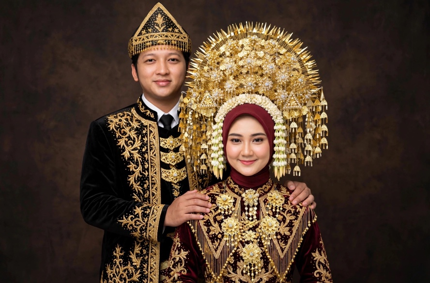
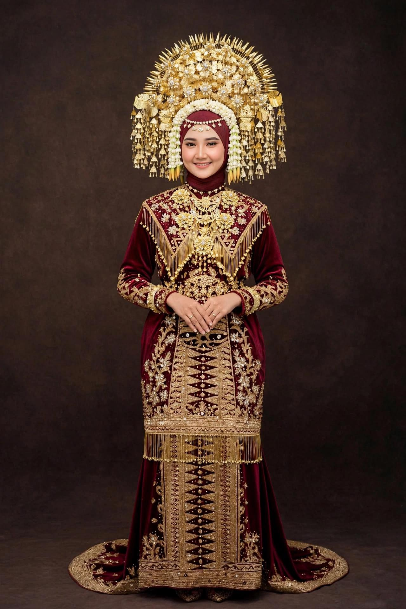
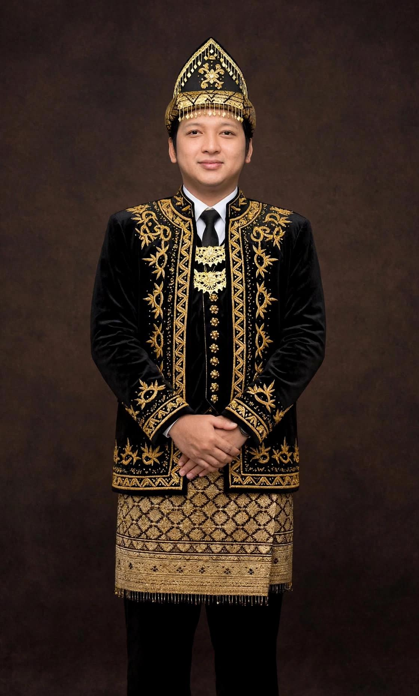
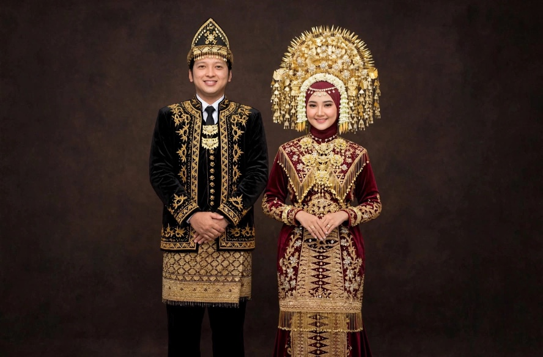
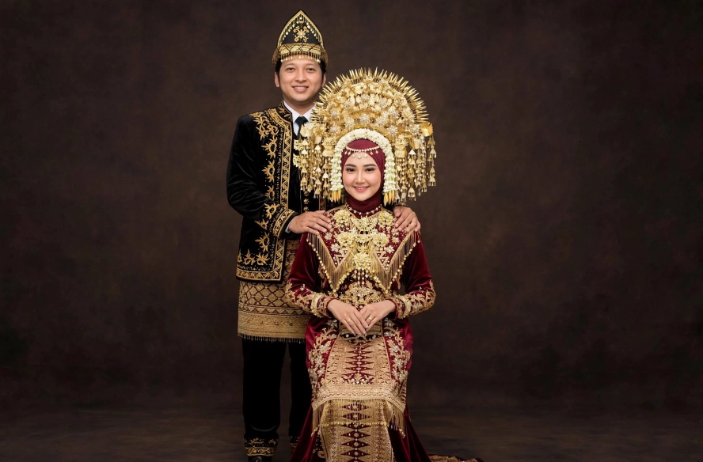
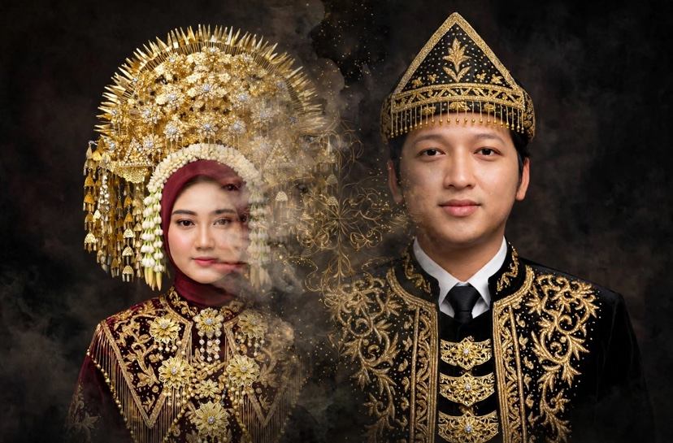
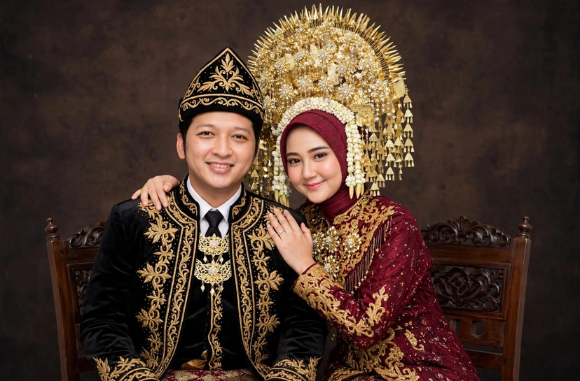
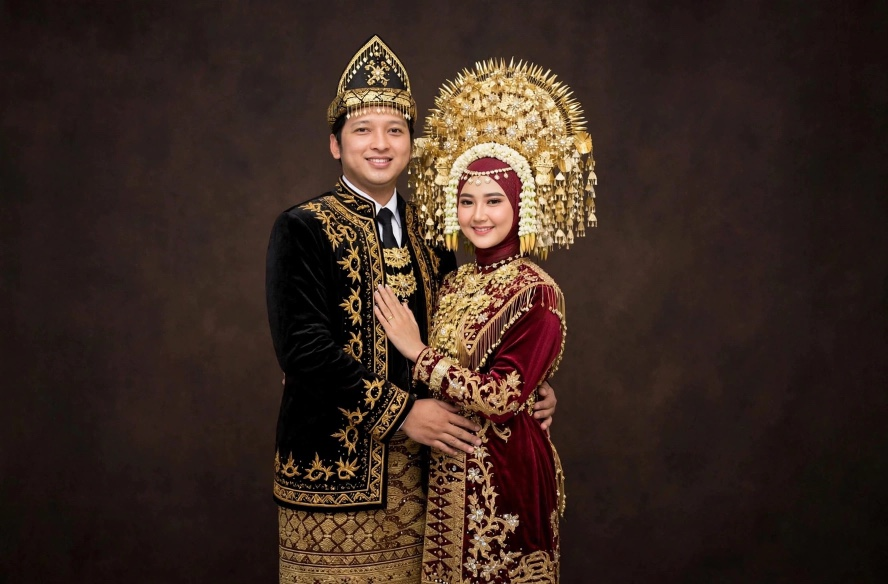
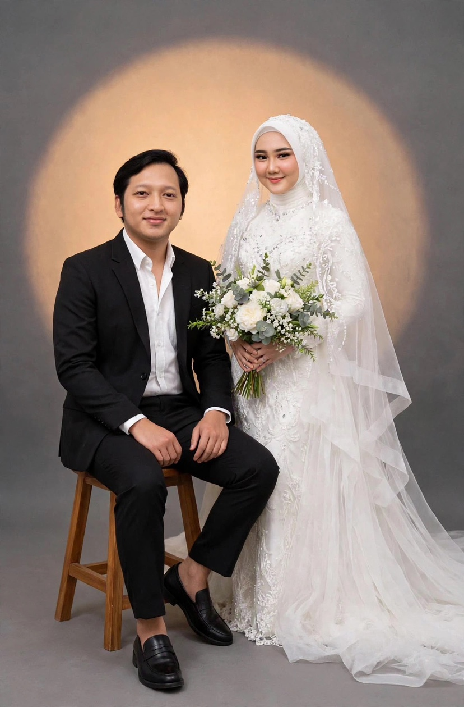

The wedding of

Wanna & Fikri
Sabtu, 12 Desember 2026
Assalamu'alaikum Wr. Wb.
"Di antara tanda-tanda (kebesaran)-Nya ialah bahwa, Dia menciptakan pasangan-pasangan untukmu dari (jenis) dirimu sendiri agar kamu merasa tenteram kepadanya. Dia menjadikan di antaramu rasa cinta dan kasih sayang. Sesungguhnya pada yang demikian itu benar-benar terdapat tanda-tanda (kebesaran Allah) bagi kaum yang berpikir."
(QS Ar-Rum:21)
Mempelai

Wannahari Shalsabila
Putri dari bapak Alm. Suharjak & Ibu Yusnani Rangkuti

Mohammad Fikri Achyar
Putra dari Bapak Anhar & Ibu Nurul Hidayani
Menuju Hari Bahagia
Detail Acara
Akad Nikah
Sabtu, 12 Desember 2026
09.00 - 10.30 WIB
Jalan Patriot Gg. Perjaga No.30 A, Kel.Lalang, Kec. Medan sunggal, Kota Medan, Sumatera Utara
Resepsi
Sabtu, 12 Desember 2026
10.30 - Selesai
Jalan Patriot Gg. Perjaga No.30 A, Kel.Lalang, Kec. Medan sunggal, Kota Medan, Sumatera Utara
Galeri





Lokasi Acara
Rumah Kediaman Perempuan
Wedding Gift
Doa restu Anda adalah hadiah terindah bagi kami. Namun jika ingin memberi tanda kasih, dapat melalui:
BCA
5385098631
a.n Mohammad Fikri Achyar
MANDIRI
1270010703096
a.n Wannahari Shalsabila
Wishes
Ucapan & Doa
Berikan ucapan dan doa kepada kedua mempelai
Terima Kasih

Merupakan kebahagiaan bagi kami apabila Bapak/Ibu/Saudara/i berkenan hadir dan memberikan doa restu. Terima kasih atas kehadiran dan doa yang diberikan.
Wassalamu'alaikum Wr. Wb.
Kami yang berbahagia